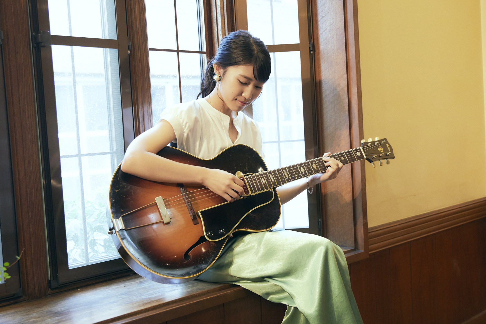

NEWS!!
●●●ラジオ出演情報
◇全国104局ネットラジオ「川辺保弘のMUSIC HOT FLAVOR」
パーソナリティ/音楽評論家：川辺 保弘
オンエア日： 11月29日（日）23時20分～23時50分ごろ 予定（変更の場合あり）
全国コミュニティFM 104局 http://odaibatv.jp/radio/mhf_st.html
サイマル放送対応
http://odaibatv.jp/radio/simul.htm
番組名「Music Hot Flavor」に○印がある局がサイマル放送対応局です。
さらに、JCBAインターネットサイマルラジオサイト登録局に○印がある局は、
以下のサイトから該当局の「LISTEN」をクリックするとすぐ聴けるので便利です。
https://www.jcbasimul.com
◇FMヨコハマ「Midnight Jammin'」
※新型コロナで療養中の井上銘さんの代打でパーソナリティを務めています。
オンエア日：11/27（金）、12/4（金）いずれも24：30～25：00
無料アプリ、ラジコでお聴きいただけます。
http://radiko.jp/share/?sid=YFM&t=20201024003000…
◇コマラジ「田辺ちゃんの音こまえ」
パーソナリティ/ジャズギター:田辺充邦
オンエア日：11/20（金）、11/27（金）いずれも20:00〜
無料アプリ、リスラジでお聴きいただけます。
https://apps.apple.com/.../listenradio-%E3.../id1460129712
（2020/11/24更新）
●●●雑誌掲載情報
11/14発売 ジャズライフ12月号
11/24発売 ジャズジャパン12月号
にインタビュー記事が掲載されました。
（2020/11/24更新）
●●●『Introducin'』リリース記念ライブ決定！
2/18(木) 渋谷JZ brat！
Open 18:30 Start 19:30
Charge 予約¥5,000 当日¥5,500
メンバー：浅利史花g 北島佳乃子p 小杉敏b 柳沼佑育d
ゲスト：駒野逸美tb 江澤茜as
(11/16予約開始)
(2020/11/14更新)